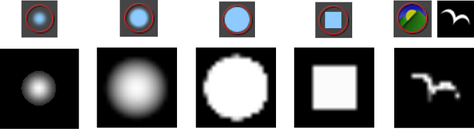
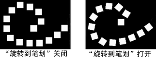
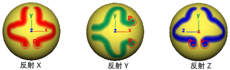
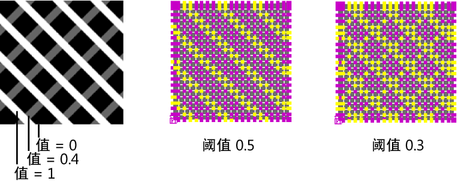

- 在“建模”(Modeling)、“动画”(Animation)和“绑定”(Rigging)菜单集中：“变形 > (绘制权重)接近度包裹”(Deform > (Paint Weights) Proximity Wrap) >

通过“绘制接近度包裹权重工具”(Paint Proximity Wrap Weights Tool)，可以使用笔刷在基础形状上绘制接近度包裹权重。
绘制接近度包裹权重工具设置(Paint Proximity Wrap Weights Tool Settings)
笔刷(Brush)
使用该区域中的设置可定义笔刷图章形状、大小和方向。
- 半径(U)(Radius (U))
-
如果使用光笔，则设定笔刷的半径上限或可能的最大半径。无论使用多大的力按光笔，笔刷半径都不会超过该半径。如果未使用光笔，则该设置会定义笔刷的半径。如果使用滑块，最大值为 50；但如果使用热键（按 B 并拖动鼠标左键），则可以设定一个比 50 大的值。
- 半径(L)(Radius (L))
-
如果使用光笔，则设定在按该光笔时笔刷的半径下限或可能的最小半径。如果未使用光笔，则不会使用该设置。
- 不透明度(Opacity)
-
使用“不透明度”(Opacity)设置，您可以进行更为缓和的更改，以获得更精细的效果。将“不透明度”(Opacity)设置为 0 时，笔刷笔划将没有任何效果。
- 积累不透明度(Accumulate Opacity)
-
在单个笔划经过自身时积累不透明度。
所有 Artisan 工具（除“绘制选择工具”(Paint Select Tool)、“绘制集成员身份工具”(Paint Set Membership Tool)和“绘制流体工具”(Paint Fluids Tool)）均提供该选项。
- 剖面(Profile)
-
单击笔刷轮廓。这将确定受选择影响的区域的形状。
除了四种预设笔刷轮廓外，您也可以选择图像来定义笔刷图章轮廓。Maya 在 brushShapes 目录（位于 Maya 的默认安装目录）下提供了 40 种其他笔刷形状。可以使用 Maya 支持的任何文件格式创建您自己的形状。Maya 使用图像的亮度值并将图像缩放至 256x256。
若要选择图像，请单击“浏览”(Browse)按钮，选择形状，然后单击“打开”(Open)。调整图章间距(Stamp Spacing)以获得所需的效果。

若要选择最后打开的图像，请单击“浏览”(Browse)按钮左侧的图标。如果选择 brushShapes 目录中随 Maya 提供的图像文件，该图标会更改以显示该形状。
 - 旋转到笔划(Rotate To Stroke)
-
确定圆化程度不一致的笔刷形状的对齐方式。启用该选项可相对于笔刷移动方向对齐图章形状。禁用该选项可相对于上方向向量对齐图章形状。当您更改视图时，图章形状保持其方向。

“绘制属性”(Paint Attributes)区域
绘制操作定义如何将权重应用于目标形状。
- 替换(Replace)
-
笔刷笔划会将目标权重替换为笔刷设置的权重。
- 添加(Add)
-
笔刷笔划会将目标权重添加到为笔刷设置的权重。
- 缩放(Scale)
-
笔刷笔划可按为笔刷设置的权重因子缩放目标权重。
- 平滑(Smooth)
-
笔刷笔划可以均衡邻近顶点的权重，以便更加平稳地在权重间进行过渡。
- 值(Value)
-
设置要在执行任何绘制操作时应用的权重值。
- 最小值/最大值(Min/Max Value)
-
设置最小和最大可能的权重值。默认情况下，可以绘制 0 到 1 之间的权重值。通过设置“最小值/最大值”(Min/Max Value)可以扩大或缩小值范围。负值对于减去权重非常有用。例如，如果将“最小值”(Min Value)设置为 -1，将“值”(Value)设置为 -0.5，然后选择“相加”(Add)作为操作，则将从绘制的顶点权重中减去 0.5。正值用作倍增。
提示： 为了帮助您在绘制范围大于 0 到 1（例如，-5 到 5）时区分绘制值，并在绘制值范围为 0 到 1（例如，0.2 到 0.8）时最大程度地扩大显示的值范围，请设置“最小颜色”(Min Color)和“最大颜色”(Max Color)（在“显示”(Display)部分中）以符合“最小值/最大值”(Min/Max values)。 - 区间限定(Clamp)
-
选择是否要在指定范围内钳制值，而不管在绘制时设置的值如何。
- 下限(Lower)
-
启用该选项以将下限值钳制到以下指定的“钳制值”(Clamp Value)。例如，如果钳制“下限”(Lower)并将下限“钳制值”(Clamp Value)设置为 0.5，则绘制的权重永远不会小于 0.5，即使将“值”(Value)设置为 0.25 也是如此。
- 上限(Upper)
-
启用该选项可将上限值钳制到下面指定的“钳制值”(Clamp Value)。例如，如果钳制“上限”(Upper)，请将上限“钳制值”(Clamp Value)设置为 0.75，并将“值”(Value)设置为 1，绘制的权重永远不会大于 0.75。
- 钳制值(Clamp Values)
-
设置要钳制的“下限”(Lower)和“上限”(Upper)值。
- 整体应用(Flood)
-
单击“整体应用”(Flood)可将笔刷设置应用于目标形状上的所有权重。结果取决于在执行整体应用时定义的笔刷设置。请参见整体应用绘制。
- 向量索引(Vector index)
-
如果正在绘制三个通道属性（RGB 或 XYZ），请选择要绘制的通道。
笔划(Stroke)
使用该区域中的选项，可以定义绘制笔划时如何应用笔刷图章。
- 屏幕投影(Screen Projection)
-
禁用此选项（默认设置）后，笔刷方向将沿曲面。启用此选项后，笔刷方向将沿视图平面，且图章会投影到选定的曲面。

如果使用的是 Artisan 笔刷，您通常希望禁用该选项。如果曲面非常复杂，则使用 Artisan 笔刷时可能需要启用该选项。
如果使用“3D 绘制工具”(3D Paint Tool)，请在以下情况下启用它：
- 曲面有接缝
- UV 被切开
- 有多个曲面
- 曲面具有不平坦的参数化
使用“屏幕投影”(Screen Projection)可能会产生涂抹，在涂抹处曲面近似垂直于屏幕，且性能可能会降低。进行简单的翻滚，以使曲面与屏幕大致平行。
- 反射(Reflection)
-
启用用于反射的该复选框。
注： “绘制蒙皮权重工具”(Paint Skin Weights Tool)禁用了“反射”(Reflection)。另一种反射蒙皮权重的方法是在“绑定”(Rigging)菜单集中设置镜像蒙皮权重选项（“蒙皮 > 镜像蒙皮权重”(Skin > Mirror Skin Weights > )）。
)）。
- 基于原点镜像(Reflection About Origin)
-
（必须选中“反射”(Reflection)选项才能使用该选项。）
默认情况下，反射轴是选定对象的边界框的中心。若要将反射轴变成原点，请启用该复选框。如果模型没有完全对称，该选项将非常有用；例如，动物的尾巴弯向一侧。
- 反射轴(Reflection Axis)
-
（必须选中“反射”(Reflection)选项才能使用该选项。）
检查要反射到的轴。反射的原点是选定对象的边界框的中心。
 - 图章间距(Stamp Spacing)
-
在曲面上单击笔刷可创建图章。笔刷笔划由多个重叠的图章构成。可以设定图章的重叠方式。如果将“图章间距”(Stamp Spacing)设置为 1，则每个图章的边将相互接触。如果将间距设定为大于 1，则图章间将存在间距。如果将间距设定为小于 1，则图章将重叠。

- 图章深度(Stamp Depth)
-
“图章深度”(Stamp Depth)值确定图章被投影的距离。例如，在使用“3D 绘制工具”(3D Paint Tool)进行绘制时，如果曲面上有褶皱，请减小“图章深度”(Stamp Depth)值，从而避免绘制曲面的其他区域。默认设置为 0.5。
光笔压力(Stylus Pressure)
使用该区域中的设置，可以定义使用光笔和对压力敏感的绘图板时光笔压力对笔划的影响。有关设定光笔压力的详细信息，请参见设置光笔压力。
- 光笔压力(Stylus Pressure)
-
启用该选项后，将激活压力对光笔的影响。
- 压力映射(Pressure Mapping)
-
选择希望受光笔压力影响的 Artisan 笔刷属性。如果添加到光笔的压力，将会增加选定属性的值。可以影响“不透明度”(Opacity)、“半径”(Radius)或“二者”(Both)。
属性贴图(Attribute Maps)
“导入”(Import)区域
使用该区域中的选项可以导入属性贴图。有关更多详细信息，请参见导入属性贴图。
- 贴图名称(Map Name)
-
单击“导入”(Import)，然后选择要将值映射到的图像。
- 重新指定属性贴图
-
如果要从多个曲面导入在 Artisan 中创建的贴图，请启用“重新指定属性贴图”(Reassign Attribute Maps)。
导入值(Import Value)
选择已导入图像的要用于值的通道。
- 亮度(Luminance)
-
使用待导入贴图的亮度值。
- Alpha
-
使用待导入贴图的 Alpha 通道值。
- 红(Red)、绿(Green)、蓝(Blue)
-
仅使用待导入贴图的“红”(Red)、“绿”(Green)或“蓝”(Blue)值。
- RGB
-
仅适用于“绘制顶点颜色工具”(Paint Vertex Color Tool)，可以导入每个 RGB 通道值。
- RGBA
-
仅适用于“绘制顶点颜色工具”(Paint Vertex Color Tool)，可以导入 RGB 和 Alpha 通道值。
- 阈值(Threshold)
-
仅适用于“绘制选择工具”(Paint Selection Tool)。定义受工具选择类型影响的最小值。例如，如果将“绘制操作”(Paint Operation)类型设定为“选择”(Select)，将“阈值”(Threshold)设定为 0.5，则 Artisan 将选择已导入的顶点，其中导入值大于等于 0.5。

“导出”(Export)区域
使用该区域中的选项可以将属性值（使用以下工具创建的）导出到属性贴图：“绘制选择”(Paint Selection)、“绘制属性”(Paint Attributes)、“绘制簇权重”(Paint Cluster Weights)、“绘制抖动权重”(Paint Jiggle Weights)、“绘制柔体权重”(Paint Soft Body Weights)、“绘制流体”(Paint Fluids)、“绘制顶点颜色工具”(Paint Vertex Color Tool)、“绘制毛发属性”(Paint Fur Attributes)、“绘制布料特性”(Paint Cloth Properties)、“绘制布料碰撞特性”(Paint (Cloth) Collision Properties)和绘制头发工具。有关更多详细信息，请参见导出属性贴图。
- 贴图名称(Map Name)
-
单击“导出”(Export)，以选择要将绘制值导出到的图像的位置，然后输入导出的文件的名称。
导出值(Export Value)
选择要将属性值导出到的图像值。
- 亮度(Luminance)
-
导出贴图的亮度值。
- Alpha
-
导出到贴图的 Alpha 通道值。
- RGB
-
导出到每个 RGB 通道值。
- RGBA
-
导出到 RGB 和 Alpha 通道值。
- 图像格式(Image Format)
-
选择用于保存图像的格式。能够以 Maya 支持的任何图像格式保存图像。有关详细信息，请参见手册的“基础知识”部分。
注： 在其他应用程序中使用在 Artisan 中创建的 .tif 格式的纹理文件可能会产生消息。这些消息无害，可以忽略。 - 保持纵横比(Keep Aspect Ratio)
-
启用“保持纵横比”(Keep Aspect Ratio)，可以在导出属性贴图时保持其宽高纵横比。
- 贴图大小 X (Map Size X)、贴图大小 Y (Map Size Y)
-
在“X”和“Y”方向设定“贴图大小”(Map Size)。默认值为 256 像素。
“显示”(Display)区域
定义笔刷和曲面的显示方式。
- 绘制笔刷(Draw brush)
-
启用该选项后，在场景视图中将显示绘制工具。
- 绘制时绘制笔刷(Draw brush while painting)
-
启用该选项后，在曲面上绘制时将显示绘制工具的笔刷轮廓。禁用该选项后，在曲面上绘制时将只显示笔刷指针。默认情况下，“绘制时绘制笔刷”(Draw brush while painting)处于禁用状态。
如果绘制时发现交互速度较慢，请禁用该选项。这会大大提高显卡的性能，而无需叠加平面。
- 绘制笔刷切线轮廓(Draw brush tangent outline)
-
启用该选项后，在选定曲面上移动指针时将显示绘制工具的笔刷轮廓。如果该设置处于禁用状态，在选定曲面上移动指针时将看不到笔刷轮廓。
 注： 可以将笔刷轮廓颜色更改为一种可以在正绘制的曲面中提供最佳对比度的颜色。有关详细信息，请参见更改笔刷轮廓颜色。
注： 可以将笔刷轮廓颜色更改为一种可以在正绘制的曲面中提供最佳对比度的颜色。有关详细信息，请参见更改笔刷轮廓颜色。 - 显示笔刷反馈(Draw brush feedback)
-
显示有关为笔刷设定的待执行操作的笔刷轮廓的信息。

- 显示线框(Show wireframe)
-
在选定曲面上显示线框。
- 颜色反馈(Color feedback)
-
仅适用于“绘制属性”(Paint Attributes)、“绘制簇权重”(Paint Cluster Weights)、“绘制抖动权重”(Paint Jiggle Weights)、“绘制蒙皮权重”(Paint Skin Weights)、“绘制柔体权重”(Paint Soft Body Weights)、“绘制集成员身份”(Paint Set Membership)、“绘制毛发属性”(Paint Fur Attributes)和绘制头发工具。
启用该选项后，曲面属性将显示为灰度值。这有助于在绘制时查看区域，且有助于识别值是什么（值越小越暗，值越大越亮）。若要显示颜色反馈，必须在 Maya 中启用平滑着色处理。
注： 如果为 1“次”(Degree) NURBS 曲面，则“颜色反馈”(Color Feedback)将无法正常工作。 - 自动顶点颜色显示(Automatic vertex color display)
-
如果启用该选项，Maya 会自动修改以下设置来使顶点颜色可见：
- 视口着色模式设置为“对所有项目进行平滑着色处理”(Smooth Shade All)。
- 活动对象的“网格组件显示 > 显示颜色”()属性处于启用状态。
自动顶点颜色显示在默认情况下处于启用状态。
- 最小显示颜色(Min display color)
-
仅适用于“绘制属性”(Paint Attributes)、“绘制簇权重”(Paint Cluster Weights)、“绘制抖动权重”(Paint Jiggle Weights)、“绘制蒙皮权重”(Paint Skin Weights)、“绘制柔体权重”(Paint Soft Body Weights)、“绘制毛发属性”(Paint Fur Attributes)和绘制头发工具。设定显示最小颜色时的值。如果属性值彼此非常接近，使颜色反馈显示太不明显而难以检测，则这将非常有用。
- 最大显示颜色(Max display color)
-
仅适用于“绘制属性”(Paint Attributes)、“绘制簇权重”(Paint Cluster Weights)、“绘制抖动权重”(Paint Jiggle Weights)、“绘制蒙皮权重”(Paint Skin Weights)、“绘制柔体权重”(Paint Soft Body Weights)、“绘制毛发属性”(Paint Fur Attributes)和绘制头发工具。设定显示最大颜色时的值。如果属性值彼此非常接近，使颜色反馈显示太不明显而难以检测，则这将非常有用。
- 显示活动顶点(Display Active Vertices)
-
仅适用于“绘制集成员身份工具”(Paint Set Membership Tool)，启用该选项可显示选定集的活动顶点。如果禁用该选项，则选择“集成员身份”(Set Membership)选项卡上的某个集时，该集的顶点将处于活动状态，但是您看不到这些顶点。